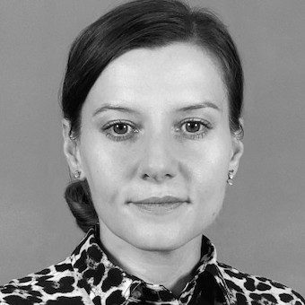

|  |
Małgorzata Okrasa, PhD
Researcher at Central Institute for Labour Protection – National Research Institute,
About meI am actively involved in safety research and environmental engineering, especially concerning occupational exposure regarding existing hazards and working conditions. |
| Years | Position |
| (2012 - ) | Research position at Central Institute for Labour Protection – National Research Institute, PPE Department, Laboratory of Respiratory Protective Devices |
| (11-12.2017) | PEROSH Research Exchange Fellowship at Institute for Occupational Safety and Health of the German Social Accident Insurance (IFA), Sankt Augustin, Germany |
| (07-08.2006) | Intern at Central Institute for Labour Protection – National Research Institute, PPE Department, Protective Clothing Laboratory |
| Mathematica | ٭٭٭٭ | Statistica | ٭٭٭٭٭ |
| Microsoft Office | ٭٭٭٭٭ | Latex | ٭٭٭٭٭ |
Link to: Contact info